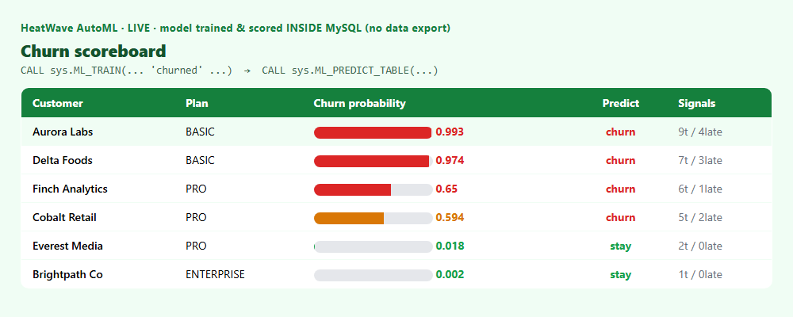

Predict churn with two SQL calls. No data export, no notebook, no separate model server.
The usual ML loop exports features to a notebook, trains somewhere else, and stands up a model service. MySQL HeatWave keeps it all in the database: ML_TRAIN builds the model, ML_PREDICT_TABLE scores your rows. The data, the model, and the predictions never leave MySQL.
CALL sys.ML_TRAIN('heatwave_ai.churn_train', 'churned',
JSON_OBJECT('task','classification'), @churn_model);
CALL sys.ML_MODEL_LOAD(@churn_model, NULL);HeatWave AutoML picks the algorithm and tunes it for you — no hyper‑parameter wrangling.
CALL sys.ML_PREDICT_TABLE('heatwave_ai.customers', @churn_model,
'heatwave_ai.customers_scored', NULL);
SELECT name, ml_results->>'$.predictions.churned' AS churn,
ml_results->'$.probabilities."1"' AS churn_prob
FROM customers_scored ORDER BY churn_prob DESC;
pip install -r requirements.txt
copy .env.example .env # MySQL HeatWave connection
python automl.py📦 Full code on GitHub: github.com/khadayatepa/heatwave-automl
A learning demo on synthetic data.